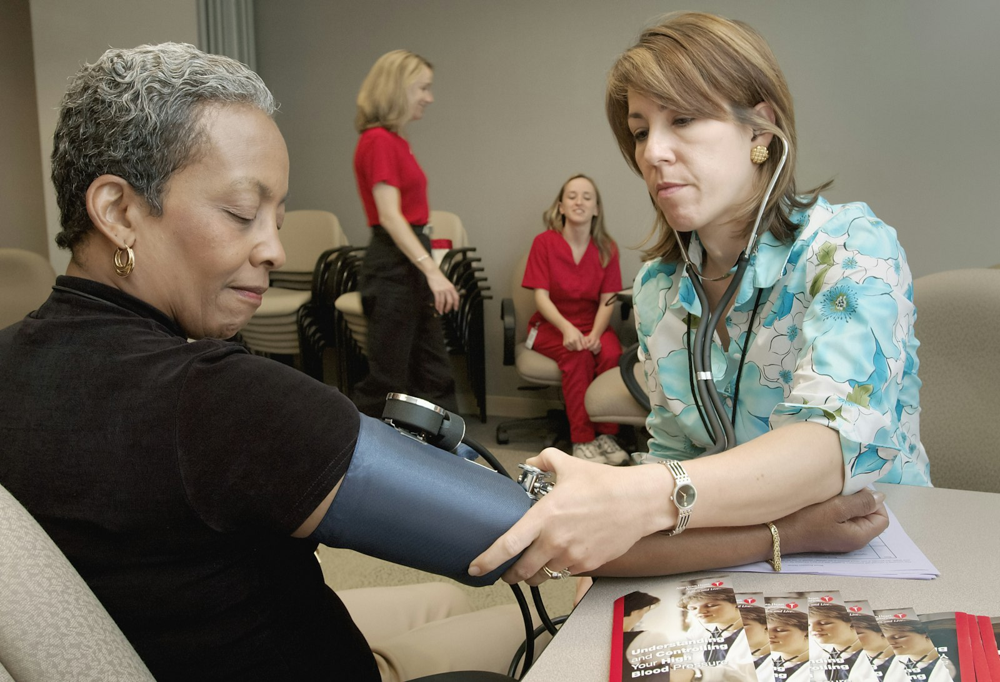
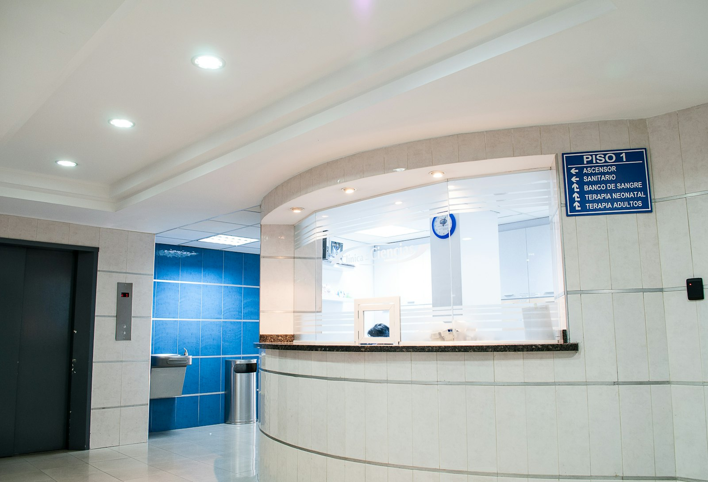
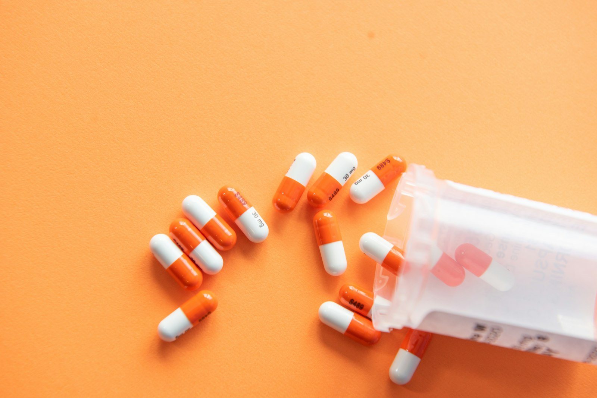

界面风格方案 v2 · 端庄简约
针对"端庄大气、简约"重做的视觉规范。核心变化：去掉全部 emoji 图标、去掉重投影、
统一到一个墨蓝主色、圆角收小；照片只出现在有时间感和情绪的位置，信息密集的列表页不用照片。
照片全部来自 Unsplash（免费商用、无需署名），已下载到本地，不依赖外链。
一、色彩与版式规范
主色板
#1B3B5F
主色 墨蓝
#2C6E8F
次级
#EAF0F5
浅底
#B3261E
逾期/危险
#2E7D5B
完成
#F6F7F9
页面底色
- 主色从原来的亮蓝换成墨蓝：稳、不刺眼，符合医院场景
- 只用三种状态色：朱红（逾期/异常）、松绿（完成）、琥珀（待处理）
版式与元件
- 圆角 10px（原 14~18px），去掉玩具感
- 分层用 1px 细边框，不用大投影；只有底部导航保留一层极浅投影
- 标题 600 字重、字距 0.5~2px；正文 14~15px，次要信息 12.5px 灰
- 章节标题左侧 3px 竖条，替代原来的彩色色块
- 标签统一 4px 圆角小方块，不再用胶囊
图标
- 全部换掉 emoji（医院、电话、对勾这类符号在正式系统里不合适）
- 改用 1.5px 细线 SVG，颜色随文字（currentColor）
- 底部导航、按钮、列表项统一同一套线条风格
- 不引入图标库，直接内联，包体积不增加
照片使用原则
- 只用真实摄影，不用 AI 生成图
- 医护端：只有登录页用照片（通栏 + 墨蓝渐变遮罩）
- 患者端：登录页 + 首页问候条，共两处
- 列表页、表单页、报告页一律不用照片，保证信息密度
- 照片统一加墨蓝叠色，避免"网上随便找的图"感
二、界面预览（375 × 812 真实尺寸）
医护端 · 登录（照片通栏 + 墨蓝遮罩）
医护端 · 待办（无照片，信息优先）
患者端 · 首页（问候照片带）
患者端 · 报告详情（不用照片）
三、照片清单（请重点看这一节）
下面 8 张是备选，都已下载到本地 frontend/public/photos/，可商用、无需署名、不依赖外链。
请告诉我哪些留、哪些换、哪个位置想换别的题材。
| 预览 | 文件 | 建议用途 | 状态 |
|---|
| hospital-building.jpg | 医护端登录页通栏：现代医院建筑，稳重大气 | 已采用 |
| handshake-care.jpg | 患者端首页问候条：护士与老年患者交流，有温度 | 已采用 |
| doctor-patient-2.jpg | 备选：医生面诊，可用于科室介绍或帮助页 | 备选 |
 | medical-team.jpg | 备选：测量血压，适合健康宣教区 | 备选 |
 | hospital-reception.jpg | 备选：导诊台 / 院区环境 | 备选 |
| stethoscope.jpg | 备选：听诊器静物，适合空状态或页脚 | 备选 |
| doctor-portrait.jpg | 备选：医生肖像，可用于"我的医生"卡片 | 备选 |
 | pharmacy.jpg | 备选：用药提醒相关页面 | 备选 |
四、需要你拍板的三件事
1. 主色
- 当前方案：墨蓝 #1B3B5F
- 备选 A：藏青偏黑 #14283C（更沉稳、偏行政）
- 备选 B：青瓷墨绿 #14524A（更柔和，患者端更亲切）
- 备选 C：医院 VI 标准色（给我色值我直接换）
2. 照片密度
- 方案 A（当前）：只有登录页与患者端首页用照片，其余全素
- 方案 B：再加"我的"页头部一张小图
- 方案 C：完全不用照片，纯色 + 线条（最简，但偏冷）
3. 照片来源
- 当前：Unsplash，已本地化，免费商用、无需署名
- 医院自有宣传照（院区、科室、团队）换上最合适、最有辨识度
- 若有版权图库账号，下载后放到 frontend/public/photos 同名替换即可，界面不用再改
关于"上网找图"的说明：我核对了网络可达情况——百度打不开，必应图片结果里大量是
freepik / dreamstime / alamy 这类带水印的付费图库，直接抓下来用有版权风险，所以我没有那样做。
本方案的图片全部来自 Unsplash 免费商用授权，已下载到项目里。
如果你希望用特定来源（医院实拍、自有图库），把文件给我，我同名替换，界面不用再改。